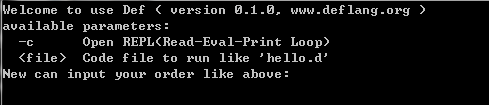

简捷而强大
只需花费几分钟，便可轻松使用 Def !
接下来会有一个简单的教程。通过一些代码小例子，快速了解 Def 的语法。如果你具备 C++、Java、Python、JavaScript 或其它任何编程语言的经验，你会发现使用 Def 是如此的简单、便捷和符合直觉！
Def 通过虚拟机的方式解释运行代码。点此下载虚拟机，可选择直接下载对应平台的可执行文件，也可下载源码编译生成。
下面以 Windows 下为例（linux、OS X 环境下类似），下载或编译得到 def.exe 文件后双击它，会看到控制台出现欢迎和帮助信息：

接着可输入提示可用的参数，执行相应的行为。例如输入 -c 打开交互式解释执行环境（REPL），输入代码并立即看到结果。
print("hello world !") # 打印字符串
这就是 Def 的 hello world 程序：调用系统函数print向控制台输出内容。
你可以在交互式解释执行环境中输入这一行代码并立即看到结果，考虑到下面会有更多的代码示例用于测试练习，我们新建一个文件 hello.d 输入上面的代码并保存，然后在控制台输入> def hello.d执行保存的代码文件并得到结果。
如果你具备其它编程语言的使用经验，下面的例子将非常简单，并与其它脚本语言并没有本质的区别，只是需要注意某些符号的变化。下面给出的示例是完全可用的，你可以复制保存为文件并执行它。
#--
块注释
--#
# 单行注释
num : 123 # 整形变量赋值
nuf : 36.9 # 浮点数赋值
name : "Def Programming Language" # 字符串
author : '杨捷' # 字符串
# 可以包含任何类型的列表，使用空格分开（也可使用逗号 , 隔开，可避免歧义）
conli : (1 2 ,-3 'a' 'b' (7 8 9) name author)
# key value 字典（无需任何分隔符，单数位置作为键，双数位置为值）
condt : [
'name' "Def"
'date' (2015 3 16) # 嵌套
'info' [ # value可包含任意类型
'intro' "A Programming Language"
'author' "yangjie"
]
]
# 容器访问
conli[6] # 值 (7 8 9)，列表索引从 1 开始
condt['name'] # Def
condt['info']['author'] # yangjie，多层访问
print(num) # 调用系统函数打印
printl(name) # 打印并换行
printr(conli) # 递归打印容器类型
printlr(condt) # 递归打印容器并换行
# 函数定义并调用
defun add(a b) # 相加
a + b # 无需 return，自动返回函数最后一个值
; # 以分号结束
# 调用函数
result : add(1 9) # 10
注意：函数调用时函数名与括号之间不能有空格！add (1 9)错误！
从上面的示例可以看出，Def 与其它语言明显的区别是，精简了逗号或分号冒号等等一些格式化的字符，仅保留必须的符号，最大化降低使用者敲键盘的数次。
但这并不是 Def 最核心的价值。下面我们将会看到更强大的示例。
Def 拥有强大的处理器语法，支持反射和元编程。如同 Lisp 的宏一样，可以用来扩展语言的内核，定义 Lambda 表达式(lambda expression)，像处理数据一样优雅的处理代码，让 Def 成为可编程的编程语言！
# 代码块结构
codeblock : {
num : num + 100
print("eval !")
a + b
}
使用大括号将执行语句包含起来形成块结构，块结构并不会立即执行，而是像列表一样保存起来。在需要的时候再使用（执行）。
# 处理块结构
eval(codeblock[2]) # 执行代码块的第2条语句：print("eval !")
num : 11
eval(codeblock[1]) # 执行 num : num + 100
print(num) # 111
a : 'def '
b : 'lang'
name : eval(codeblock) # 执行整个代码块
print(num) # 211
print(name) # def lang
下面我们通过建立一个名为 foreach 用于遍历数组的处理器，来了解一下 Def 强大的处理器语法（尽管 Def 已经有原生的容器遍历方式，类似的你还可以自己定义一个 switch case 语句！）。
# 定义数组遍历处理器
def foreach{con k v}
arr : evaluat(con) # 执行取值
ii : size(arr)
i : 1
while i<=ii
assign(k i) # 执行赋值
assign(v arr[i])
j : 4
jj : size(_argv_)
while j<=jj
evaluat(_argv_[j]) # 执行循环体
j : j + 1
;
i : i + 1
;
;
你可以像下面这样使用这个遍历处理器，替代其它语言中的回调函数或Lambda 表达式（虽然 Def 也支持）：
# 遍历列表
list : (1 2 3 4 5 6)
total : 0
foreach{ list k v
printl(v) # 打印列表的每一项
total : total + v # 求和
# 此处可任意增加处理语句
}
print(total) #求和结果： 21
查看 Def 语言的 开发测试用例，或阅读 标准手册，了解 Def 其它更多的高级特征。